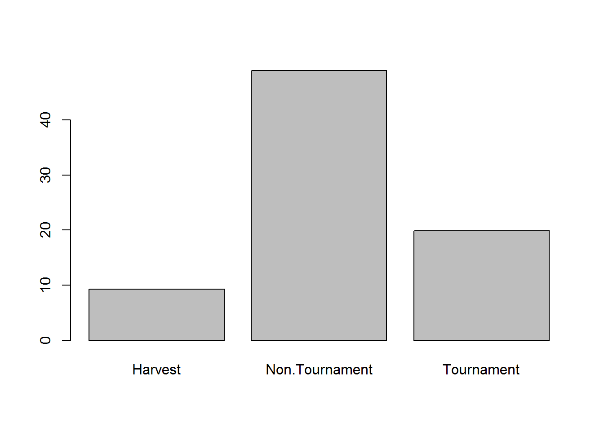
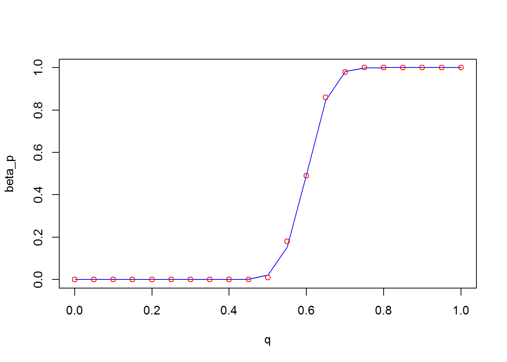
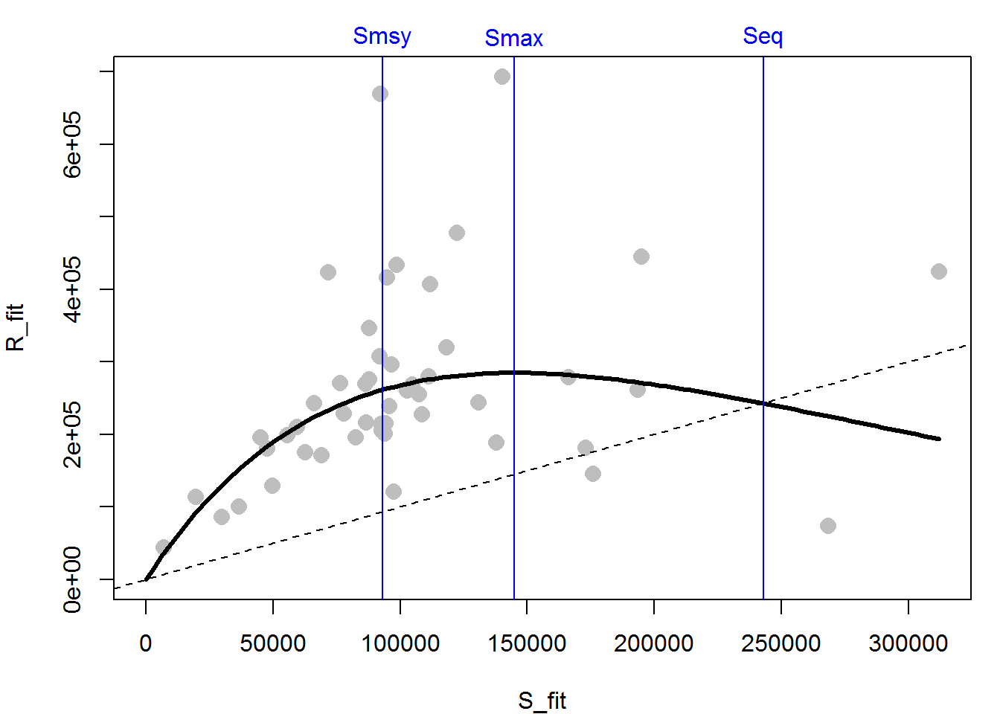

Chapter 5 Large Data Manipulation
Chapter Overview
Any data analyst will tell you that oftentimes the most difficult part of an analysis is simply getting the data in the proper format. Real data sets are messy: they have missing values, variables are often stored in multiple columns that would be better stored as rows, the same factor level may be coded as two or more different types1, or the required data are in several separate files. You get the point: sometimes significant data-wrangling may be required before you perform an analysis.
In this chapter, you will learn tricks to do more advanced data manipulation in R using two R packages:
{reshape2}(Wickham 2007): used for changing data between formats (wide and long){dplyr}(Wickham et al. 2017): used for large data manipulations with a consistent and readable format.
You will be turning daily observations of harvest and escapement (fish that are not harvested) into annual totals for the purpose of fitting a spawner-recruit analysis on a hypothetical pink salmon (Oncorhynchus gorbuscha) data set. More details and context on these terms and topics will be provided later.
IMPORTANT NOTE: If you did not attend the sessions corresponding to Chapters 1 or 2, you are recommended to walk through the material found in those chapters before proceeding to this material. Additionally, you will find the material in Section 3.4 helpful for the end of this chapter. Remember that if you are confused about a topic, you can use CTRL + F to find previous cases where that topic has been discussed in this book.
Before You Begin
You should create a new directory and R script for your work in this Chapter. Create a new R script called Ch5.R and save it in the directory C:/Users/YOU/Documents/R-Book/Chapter5. Set your working directory to that location. Revisit the material in Sections 1.2 and 1.3 for more details on these steps.
5.1 Aquiring and Loading Packages
An R package is a bunch of code, documentation, and data that someone has written and bundled into a consistent format for other R users to install and use in their R sessions. Packages make R incredibly flexible and extensible. If you are trying to do a specialized analysis that is not included in the base R distribution, it is likely that someone has already written a package that will allow you to do it!
In this chapter, you will be using some new packages that you likely don’t already have on your computer, so you will need to install them first:
install.packages("dplyr")
install.packages("reshape2")This requires an internet connection. You will see some text display in the console telling you the packages are being installed. Once the packages are installed, you need not re-install them in future sessions. However, if you install a new version of R, you will likely need to update your packages (i.e., re-install them).
Now that the packages are on your computer, you will need to load them into the current session:
library(dplyr)## Warning: package 'dplyr' was built under R version 3.5.1##
## Attaching package: 'dplyr'## The following objects are masked from 'package:stats':
##
## filter, lag## The following objects are masked from 'package:base':
##
## intersect, setdiff, setequal, unionlibrary(reshape2)These messages are telling you that there are functions in the {dplyr} package that have the same names as those already being used in the {stats} and {base} R packages. This is fine so long as you don’t want to use the original functions. If you wish to use the {base} version of the filter() function rather than the {dplyr} version, use it like this: base::filter(). Each time you close and reopen R, you will need to load any packages you want to use using library() again.
5.2 The Data
You have daily observations of catch and escapement for every other year between 1917 and 2015. Pink salmon have a simple life history where fish that spawned in an odd year return as adults to spawn in the next odd year. There is a commercial fishery in this system located at the river mouth which harvests fish as they enter the river. A counting tower is located upstream of the fishing grounds that counts the number of fish that escaped the fishery and will have a chance to spawn (this number is termed “escapement”). The ultimate goal is to obtain annual totals of spawners and total run (catch + escapement) for the purpose of fitting a spawner recruit analysis. You will perform some other analyses along the way directed at quantifying patterns in run timing.
Read in the two data sets for this chapter (see the instructions for details on acquiring data files):
catch = read.csv("../Data/daily_catch.csv")
esc = read.csv("../Data/daily_escape.csv")Look at the first 6 rows and columns of the catch data:
catch[1:6,1:6]## doy y_1917 y_1919 y_1921 y_1923 y_1925
## 1 160 175 229 245 135 2685
## 2 161 221 501 1379 1504 2361
## 3 162 242 355 1149 13 277
## 4 163 90 197 52 2721 548
## 5 164 134 428 674 747 1209
## 6 165 76 224 1211 1231 772The column doy is the day of the year that each record corresponds to, and each column represents a different year. Notice the format of the esc data is the same:
esc[1:6,1:6]## doy y_1917 y_1919 y_1921 y_1923 y_1925
## 1 161 90 189 161 73 1700
## 2 162 113 412 907 819 1495
## 3 163 124 292 756 7 176
## 4 164 46 162 34 1481 347
## 5 165 69 351 443 407 766
## 6 166 39 184 796 670 489But notice the first doy is one day later for esc than for catch. This is because of the time lag for fish to make it from the fishery grounds to the counting tower (a one day swim: fish that were in the fishing grounds on day d passed the counting tower on day d+1 if they were not harvested).
5.3 Change format using melt()
These data are in what is called wide format: different levels of the year variable are stored as columns. A long format would have three columns: one for doy, year, and catch or esc. Turn the catch data frame into long format using the melt() function from {reshape2}:
long.catch = melt(catch, id.var = "doy",
variable.name = "year",
value.name = "catch")
head(long.catch)## doy year catch
## 1 160 y_1917 175
## 2 161 y_1917 221
## 3 162 y_1917 242
## 4 163 y_1917 90
## 5 164 y_1917 134
## 6 165 y_1917 76The first argument is the data frame to reformat, the second argument (id.var) is the variable that identifies one observation from another, here it is the doy that the count occurred on. In this case, it is actually all we need to run melt properly. The optional variable.name and value.name arguments specify the names of the other two columns. These default to “variable” and “value” if not specified. Do the same thing for escapement:
long.esc = melt(esc, id.var = "doy",
variable.name = "year",
value.name = "esc")
head(long.esc)## doy year esc
## 1 161 y_1917 90
## 2 162 y_1917 113
## 3 163 y_1917 124
## 4 164 y_1917 46
## 5 165 y_1917 69
## 6 166 y_1917 39Anytime you do a large data manipulation like this, you should compare the new data set with the original to verify that it worked properly. Ask if all of the daily catches for a given year in the original data set match up to the new data set:
all(catch$y_2015 == long.catch[long.catch$year == "y_2015", "catch"])## [1] TRUEThe single TRUE indicates that every element matches up for 2015 in the catch data, just like they should.
To reverse this action (i.e., to go from long format to wide format), you would use the dcast() function from {reshape2}:
dcast(long.catch, doy ~ year, value.var = "catch")The formula specifies which variables are ID variables on the left-hand side, and which variable should get expanded to multiple columns. The value.var argument indicates which variable will be placed into the columns.
5.4 Join Data Sets with merge()
You now have two long format data sets. You can turn them into one data set with the merge() function (which is actually in the {base} package). merge() takes two data frames and joins them based on certain grouping variables. Here, you want to combine the data frames long.catch and long.esc into one data frame, and match the rows by the doy and year for each unique pair:
dat = merge(x = long.esc, y = long.catch,
by = c("doy", "year"), all = T)
head(dat)## doy year esc catch
## 1 160 y_1917 NA 175
## 2 160 y_1919 NA 229
## 3 160 y_1921 NA 245
## 4 160 y_1923 NA 135
## 5 160 y_1925 NA 2685
## 6 160 y_1927 NA 163The all = T argument is important to specify here. It says that you wish to keep all of the unique records in the columns passed to by from both data frames. The doy in the catch data ranges from day 160 to day 209, whereas for escapement it ranges from day 161 to day 210. In this system, the fishery opens on the 160th day of every year, and the counting tower starts the 161st day. If you didn’t use all = T, you would drop all the rows in each data set that do not have a match in the other data set (you would lose day 160 and day 210 from every year). Notice that because no escapement observations were ever made on doy 160, the esc value on this day is NA.
Notice how the data set is now ordered by doy instead of year. This is not a problem, but if you want to reorder the data frame by year, you can use the arrange() function from {dplyr}:
head(arrange(dat, year))## doy year esc catch
## 1 160 y_1917 NA 175
## 2 161 y_1917 90 221
## 3 162 y_1917 113 242
## 4 163 y_1917 124 90
## 5 164 y_1917 46 134
## 6 165 y_1917 69 765.5 Lagged vectors
The present task is to the calculate daily cumulative run proportion2 in 2015 for comparison to the other years. Given the information you have, this task would be very cumbersome if not for the flexibility allowed by {dplyr}.
Remember the counting tower is an average one day swim for the salmon from the fishing grounds. This means that the escapement counts are lagged relative to the catch counts. If you want the daily run (defined as the number of fish in the fishing grounds each day), you need to account for this lag. An easy way to think about the lag is to show it graphically. First, pull out one year of data using the filter() function in {dplyr}:
y15 = filter(dat, year == "y_2015")
head(y15)## doy year esc catch
## 1 160 y_2015 NA 3342
## 2 161 y_2015 2293 2352
## 3 162 y_2015 1614 88
## 4 163 y_2015 61 3270
## 5 164 y_2015 2244 5080
## 6 165 y_2015 3486 379The {base} analog to the filter() function is:
y15 = dat[dat$year == "y_2015", ]
# or
y15 = subset(dat, year == "y_2015")They take about the same amount of code to write, but filter() has some advantages when used with other {dplyr} functions that will be discussed later. Now plot the daily catch and escapement (not cumulative yet) for 2015:
plot(catch ~ doy, data = y15, type = "b", pch = 16, col = "blue",
xlab = "DOY", ylab = "Count", main = "Raw Data")
lines(esc ~ doy, data = y15, type = "b", pch = 16, col = "red")
legend("topright", legend = c("Catch", "Escapement"),
col = c("blue", "red"), pch = 16, lty = 1, bty = "n", cex = 0.8)
Notice how the escapement counts are shifted to the right by one day. This is the lag. To account for it, you can use the lag() function from {dplyr}. lag() works by lagging some vector by n elements (it shifts every element in the vector n places to the right by putting n NAs at the front and removing the last n elements from the original vector). One way to fix the lag problem would be to use lag() on catch to make the days match up with esc (don’t lag esc because that would just lag it by n additional days):
plot(lag(catch, n = 1) ~ doy, data = y15, type = "b", pch = 16, col = "blue",
xlab = "DOY", ylab = "Count", main = "With lag(catch)")
lines(esc ~ doy, data = y15, type = "b", pch = 16, col = "red")
legend("topright", legend = c("Catch", "Escapement"),
col = c("blue", "red"), pch = 16, lty = 1, bty = "n", cex = 0.8)
Notice how the two curves line up better now.
5.6 Adding columns with mutate()
Apply this same idea to get the total daily run (what was harvested plus what was not). Make a function to take the two vectors (catch and escapement), lag one, and then sum them. Howevery, you don’t want to move catch forward a day; you need to move escapement back a day. The opposite of lag() is lead(). The way to think of this is that lag() lags a vector, and lead() unlags a vector. lead() shifts every element to the left by n elements by removing the first n elements of the original vector and adding n NAs to the end. This is what your function should look like:
lag_sum = function(x, y, n = 1){
# x is lagged from y by n days
rowSums(cbind(lead(x, n), y), na.rm = T)
}Note the use of na.rm = T to specify that summing a number with an NA should still return a number. If two NAs are summed, the result will be a zero.
Try out the lag_sum() function:
lag_sum(y15$esc, y15$catch)Add this column to your data set. You add columns in {dplyr} using mutate():
y15 = mutate(y15, run = lag_sum(esc, catch))The {base} equivalent to mutate() is:
y15$run = lag_sum(y15$esc, y15$catch)mutate() has advantages when used with other {dplyr} functions that will be shown soon. Use the new variable run to calculate two new variables: the cumulative run by day (crun) and cumulative run proportion by day (cprun). Cumulative means that each new element is the value that occurred on that day plus all of the values that happened on days before it. You can use R’s cumsum() for this:
y15 = mutate(y15, crun = cumsum(run), cprun = crun/sum(run, na.rm = T))Here is one advantage of mutate(): you can refer to a variable you just created to make a new variable within the same function. You would have to split this into two lines to do it in {base}. Indeed, you could have made run, crun, and cprun all in the same mutate() call. Plot cprun3:
plot(cprun ~ doy, data = y15, type = "l", ylim = c(0, 1),
xlab = "DOY", ylab = "Cumulative Run Proportion", lwd = 2)
5.7 Apply to all years
You have just obtained the daily and cumulative run for one year (2015), but {dplyr} makes it easy to apply these same manipulations to all years. To really see the advantage of {dplyr}, you’ll need to learn to use piping. A code pipe is one that takes the result of one function and inserts it into the input of another function. Here is a basic example of a pipe:
rnorm(10) %>% length## [1] 10The pipe took the result of rnorm(10) and passed it as the first argument to the length function. This allows you to string together commands so you aren’t continuously making intermediate objects or nesting a ton of functions together. The pipe essentially does this:
x = rnorm(10); length(x); rm(x)## [1] 10The reason piping works so well with {dplyr} is because its functions are designed to take a data frame as input as the first argument and return another data frame as output. This allows you to string them together with pipes. Do a more complex pipe: take your main data frame (dat), group it by year, and pass it to a mutate() call that will add the new three columns to the entire data set:
dat = dat %>%
group_by(year) %>%
mutate(run = lag_sum(esc, catch),
crun = cumsum(run),
cprun = crun/sum(run, na.rm = T))
arrange(dat, year)## # A tibble: 2,550 x 7
## # Groups: year [50]
## doy year esc catch run crun cprun
## <int> <fct> <int> <int> <dbl> <dbl> <dbl>
## 1 160 y_1917 NA 175 265. 265. 0.0127
## 2 161 y_1917 90 221 334. 599. 0.0288
## 3 162 y_1917 113 242 366. 965. 0.0464
## 4 163 y_1917 124 90 136. 1101. 0.0530
## 5 164 y_1917 46 134 203. 1304. 0.0627
## 6 165 y_1917 69 76 115. 1419. 0.0683
## 7 166 y_1917 39 89 134. 1553. 0.0747
## 8 167 y_1917 45 139 210. 1763. 0.0848
## 9 168 y_1917 71 127 192. 1955. 0.0941
## 10 169 y_1917 65 61 92. 2047. 0.0985
## # ... with 2,540 more rowsThe group_by() function is spectacular: you grouped the data frame by year, which tells the rest of the functions in the pipe to apply its commands to each year independently. With this function, you can group your data in any way you please and calculate statistics on a group-by-group basis. Note that in this example, it doesn’t do much for you, because the data are so neat (all years have the same number of days, and NAs in all of the same places, etc.), but for data that are messier, this trick is very handy. Also note that the dat object looks a little different. When you print it, it only shows the first 10 rows. This is a {dplyr} feature that prevents you from printing a huge data set to the console.
Now plot the cumulative run proportion by day for each year, highlighting 2015:

par(sp)
# make an empty plot
plot(x = 0, y = 0, type = "n", xlim = range(dat$doy), ylim = c(0,1),
xlab = "DOY", ylab = "Cumulative Run Proportion")
years = levels(dat$year)
# use sapply to "loop" through years, drawing lines for each
tmp = sapply(years, function(x) {
lines(cprun ~ doy, data = filter(dat, year == x),
col = ifelse(x == "y_2015", "blue", "grey"))
})5.8 Calculate Daily Means with summarize()
Oftentimes, you want to calculate a statistic for a value across grouping variables, like year or site or day. Remember the tapply() function does this in {base}. Here you want to calculate the mean cumulative run proportion for each day averaged across years. For this, you can make use of the summarize() function in {dplyr}. Begin by ungrouping the data to remove the year groups and grouping the data by doy. This will allow you to calculate the mean proportion by day. You then pass this grouped data frame to summarize() which will apply the mean() function to the cumulative run proportions across all years on a particular day. It will do this for all days:
mean_cprun = dat %>%
ungroup %>%
group_by(doy) %>%
summarize(cprun = mean(cprun))
head(mean_cprun)## # A tibble: 6 x 2
## doy cprun
## <int> <dbl>
## 1 160 0.00970
## 2 161 0.0194
## 3 162 0.0291
## 4 163 0.0387
## 5 164 0.0491
## 6 165 0.0579The way to do this in {base} is with tapply():
tapply(dat$cprun, dat$doy, mean)[1:6]## 160 161 162 163 164 165
## 0.009699779 0.019400196 0.029111609 0.038735562 0.049130566 0.057901058Note that you get the same result, only the output from tapply() is a vector, and the output of summarize() is a data frame.
One disadvantage of the summarize() function, however, is that it can only be used to apply functions that give one number as output (e.g., mean(), max(), sd(), length(), etc.). These are called aggregate functions: they take a bunch of numbers and aggregate them into one number. tapply() does not have this constraint. Illustrate this by trying to use the range() function (which combines the minimum and maximum values of some vector into another vector of length 2).
# with summarise
dat %>%
ungroup %>%
group_by(doy) %>%
summarize(range = range(cprun))## Error in summarise_impl(.data, dots): Column `range` must be length 1 (a summary value), not 2# with tapply
tapply(dat$cprun, dat$doy, range)[1:5]## $`160`
## [1] 0.0002721184 0.0256423751
##
## $`161`
## [1] 0.001485884 0.048191292
##
## $`162`
## [1] 0.003895501 0.057528072
##
## $`163`
## [1] 0.01450474 0.07435435
##
## $`164`
## [1] 0.01797648 0.08253284You can see that tapply() allows you to do this (but gives a list), whereas summarize() returns a short and informative error. You could very easily fix the problem by making minimum and maximum columns in the same summarize() call:
dat %>%
ungroup %>%
group_by(jday) %>%
summarize(min = min(cprun), max = max(cprun))Add the mean cumulative run proportion to our plot (use lines() just like before, add it after the sapply() call):
lines(cprun ~ doy, data = mean_cprun, lwd = 3)
It looks like 2015 started like an average year but the peak of the run happened a couple days earlier than average.
5.9 More summarize()
Your colleagues have been talking lately about how the run has been getting earlier and earlier in recent years. To determine if their claims are correct, you decide to develop a method to find the day on which 50% of the run has passed (the median run date) and plot it over time. If there is a downward trend, then the run has been getting earlier. First, you need to define another function to find the day that corresponds to 50% of the run. If there were days when the cumulative run on that day equaled exactly 0.5, we could simply use which():
ind = which(dat$cprun == 0.5)
dat$jday[ind]The which() function is useful: it returns the indices (element places) for which the condition is TRUE. However, you need to do a workaround here, since the median day is likely not exactly 0.5, and it must be .5 in order for == to return a TRUE). You will give the function two vectors and it will look for a value that is closest to 0.5 in one vector and pull out the corresponding value in the second vector:
find_median_doy = function(p,doy) {
ind = which.min(abs(p - 0.5))
doy[ind]
}This function will take every element of p, subtract 0.5, take the absolute value of the results (make it positive, even if it is negative), and find the element number that is smallest. This will be the element with the value closest to 0.5. Note that you could find the first quartile (0.25) or third quartile (0.75) of the run by inserting these in for 0.5 above4. Try your function on the 2015 data only:
# use function
med_doy15 = find_median_doy(p = y15$cprun, doy = y15$doy)
# pull out the day it called the median to verify it works
filter(y15, doy == med_doy15) %>% select(cprun)## cprun
## 1 0.5023032The select() function in {dplyr} extracts the variables requested from the data frame. If there is a grouping variable set using group_by(), it will be returned as well. It looks like the function works. Now combine it with summarize() to calculate the median day for every year:
med_doy =
dat %>%
group_by(year) %>%
summarize(doy = find_median_doy(cprun, doy))
head(med_doy)## # A tibble: 6 x 2
## year doy
## <fct> <int>
## 1 y_1917 184
## 2 y_1919 188
## 3 y_1921 179
## 4 y_1923 184
## 5 y_1925 182
## 6 y_1927 188Now, use your {dplyr} skills to turn the year column into a numeric variable:
# get years as a number
med_doy$year =
ungroup(med_doy) %>%
# extract only the year column
select(year) %>%
# turn it to a vector and extract unique values
unlist %>% unname %>% unique %>%
# replace "y_" with nothing
gsub(pattern = "y_", replacement = "") %>%
# turn to a integer vector
as.integerNow plot the median run dates as a time series:
plot(doy ~ year, data = med_doy, pch = 16)
It doesn’t appear that there is a trend in either direction, but fit a regression line because you can (Section 3.1.1):
fit = lm(doy ~ year, data = med_doy)
summary(fit)$coef
plot(doy ~ year, data = med_doy, pch = 16)
abline(fit, lty = 2)## Estimate Std. Error t value Pr(>|t|)
## (Intercept) 193.781416567 27.80436398 6.9694605 8.190067e-09
## year -0.005138055 0.01414108 -0.3633424 7.179445e-01
The results tell you that there is a 0.005 day decrease in median run date for every 1 year that has gone by and that it is not significantly different from a zero day decrease per year. The statistical evidence does not support your colleagues’ speculations.
5.10 Fit the Model
You have done some neat data exploration exercises (and hopefully learned {dplyr} and piping along the way!), but your ultimate task with this data set is to run a spawner-recruit analysis on all the data. A spawner-recruit analysis is one that links the number of total fish produced in a year (the recruits) to the total number of fish that produced them (the spawners). This is done in an attempt to describe the productivity and carrying capacity of the population and to obtain biological reference points off of which harvest policies can be set. You will need to summarize the daily data into annual totals of escapement and total run:
sr_dat =
dat %>%
summarize(S = sum(esc, na.rm = T),
R = sum(run, na.rm = T))
head(sr_dat)## # A tibble: 6 x 3
## year S R
## <fct> <int> <dbl>
## 1 y_1917 7031 20785.
## 2 y_1919 19647 43553.
## 3 y_1921 45106 113682.
## 4 y_1923 69160 196212.
## 5 y_1925 66306 171006.
## 6 y_1927 96622 243212.You didn’t need to use group_by() here because the data were still grouped from an earlier task. But, there is no harm in putting it in, and it would help make your code more readable if you were to include it.
That is the main data manipulation you need to do in order to run the spawner-recruit analysis. You can fit the model using nls() (Section 3.4). The model you will fit is called a Ricker spawner-recruit model and has the form:
where \(\alpha\) is a parameter representing the maximum recruits per spawner (obtained at very low spawner abundances) and \(\beta\) is a measure of the strength of density-dependent mortality. Notice that the error term is in the exponent, which makes \(e^{\varepsilon_t}\) lognormal. To get nls() to fit this properly, we will need to fit to \(log(R_t)\) as the response variable. Write a function that will predict log recruitment from spawners given the two parameters (ignore the error term):
ricker = function(S, alpha, beta) {
log(alpha * S * exp(-beta * S))
}Fit the model to the data using nls(). Before you fit it, however, you’ll need to do another lag. This is because the run that comes back in one year was spawned by the escapement the previous odd year (you only have odd years in the data). This time extract the appropriate years “by-hand” rather than using the lag() or lead() functions as before:
# the number of years
nyrs = nrow(sr_dat)
# the spawners to fit to:
S_fit = sr_dat$S[1:(nyrs - 1)]
# the recruits to fit to:
R_fit = sr_dat$R[2:nyrs]Fit the model:
fit = nls(log(R_fit) ~ ricker(S_fit, alpha, beta),
start = c(alpha = 6, beta = 0))
coef(fit); summary(fit)$sigma## alpha beta
## 5.341553e+00 6.896867e-06## [1] 0.4047541Given that the true values for these data were: \(\alpha = 6\), \(\beta = 8\times10^{-6}\), and \(\sigma = 0.4\), these estimates look pretty good.
Plot the recruits versus spawners and the fitted line:
# plot the S-R pairs
plot(R_fit ~ S_fit, pch = 16, col = "grey", cex = 1.5,
xlim = c(0, max(S_fit)), ylim = c(0, max(R_fit)))
# extract the estimates
ests = coef(fit)
# obtain and draw on a fitted line
S_line = seq(0, max(S_fit), length = 100)
R_line = exp(ricker(S = S_line,
alpha = ests["alpha"],
beta = ests["beta"]))
lines(R_line ~ S_line, lwd =3)
# draw the 1:1 line
abline(0, 1, lty = 2)
The diagonal line is the 1:1 replacement line: where 1 spawner would produce 1 recruit. The distance between this line and the curve is the theoretical harvestable surplus available at each spawner abundance that would keep the stock at a fixed abundance. The biological reference points that might be used in harvest management are:
\[\begin{eqnarray*} && S_{MAX}=\frac{1}{\beta},\\ && S_{eq}=log(\alpha) S_{MAX},\\ && S_{MSY}=S_{eq} \left(0.5-0.07*log(\alpha)\right) \tag{5.2} \end{eqnarray*}\]Where \(S_{MAX}\) is the spawner abundance expected to produce the maximum recruits, \(S_{eq}\) is the spawner abundance that should produce exactly replacement recruits, and \(S_{MSY}\) is the spawner abundance that is expected to produce the maximum surplus (all under the assumption of no environmental variability). You can calculate the reference points given in Equation (5.2) from your parameter estimates:
Smax = 1/ests["beta"]
Seq = log(ests["alpha"]) * Smax
Smsy = Seq * (0.5 - 0.07 * log(ests["alpha"]))
brps = round(c(Smax = unname(Smax),
Seq = unname(Seq),
Smsy = unname(Smsy)), -3)Draw these reference points onto your plot and label them:
abline(v = brps, col = "blue")
text(x = brps, y = max(R_fit) * 1.08,
labels = names(brps), xpd = T, col = "blue")
Exercise 5
In this exercise, you will be working with another simulated salmon data set (from an age-structured population this time, like Chinook salmon Oncorhynchus tshawytscha). You have information on individual fish passing a weir. A weir is a blockade in a stream that biologists use to count fish as they pass through. Most of the day, the weir is closed and fish stack up waiting to pass. Then a couple times a day, biologists open a gate in the weir and count fish as they swim through. Each year, the biologists sample a subset of fish that pass to get age, sex, and length. There are concerns that by using large mesh gill nets, the fishery is selectively taking the larger fish and that this is causing a shift in the size-at-age, age composition, and sex composition. If this is the case, it could potentially mean a reduction in productivity since smaller fish have fewer eggs. You are tasked with analyzing these data to determine if these quantities have changed overtime. Note that documenting directional changes in these quantities over time and the co-occurrence of the use of large mesh gill nets does not imply causation.
The solutions to this exercise are found at the end of this book (here). You are strongly recommended to make a good attempt at completing this exercise on your own and only look at the solutions when you are truly stumped.
Use the data found in asl.csv (age, sex, length) (see the instructions for details on acquiring the data files for this book). Create a new R script Ex5.R in your working directory. Open this script and read the data file into R. If this is a new session, load the {dplyr} package.
- Count the number of females that were sampled each year using the
{dplyr}functionn()within asummarize()call (Hint:n()works just like length - it counts the number of records). - Calculate the proportion of females by year.
- Plot percent females over time. Does it look like the sex composition has changed over time?
- Calculate mean length by age, sex, and year.
- Come up with a way to plot a time series of mean length-at-age for both sexes. Does it look like mean length-at-age has changed over time for either sex?
Exercise 5 Bonus
- Calculate the age composition by sex and year (what proportion of all the males in a year were age 4, age 5, age 6, age 7, and same for females).
- Plot the time series of age composition by sex and year. Does it look like age composition has changed over time?
References
Wickham, Hadley. 2007. “Reshaping Data with the reshape Package.” Journal of Statistical Software 21 (12): 1–20. http://www.jstatsoft.org/v21/i12/.
Wickham, Hadley, Romain Francois, Lionel Henry, and Kirill Müller. 2017. Dplyr: A Grammar of Data Manipulation. https://CRAN.R-project.org/package=dplyr.
E.g.,
"hatch", “Hatch”, and"HATCH"are all treated as different factor levels in R↩This is the fraction of all fish that came back each year that did so on or before a given day↩
It doesn’t look like much, but this information is incredibly important for fishery managers. It provides information on how much of the annual run has passed on each day. You can see that the rate of change is the fastest in the middle of the run, this corresponds to the major hump in the plots you made earlier (which were raw numbers by day). Of course during the run, the managers don’t know what proportion of the total run has passed because they don’t know the total number of fish that will come that season, but by characterizing the mean and variability of the different run completion proportions on each day in the past, they can have some idea of how much of the run to expect yet to come on any given day.↩
This is the perfect kind of thing to make an argument for in your function!↩